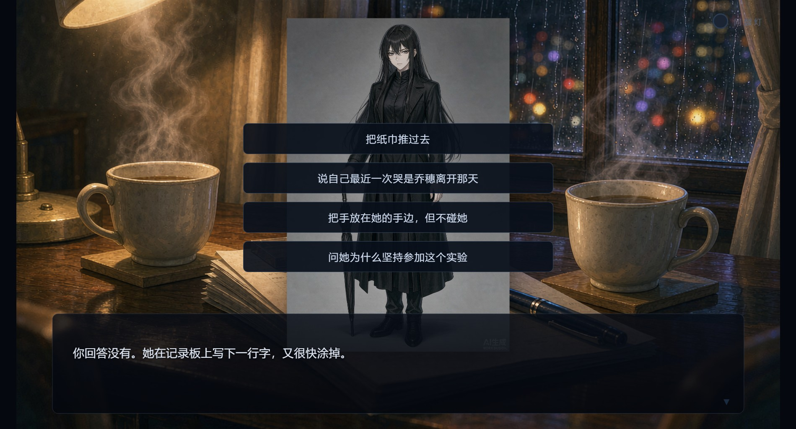
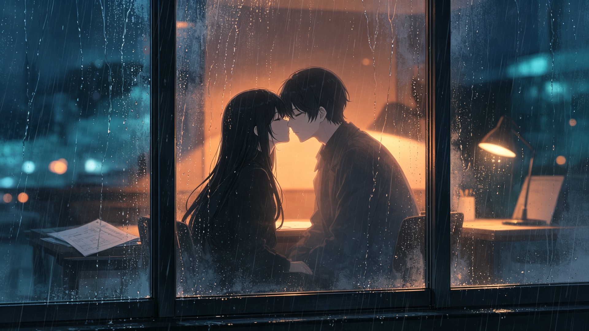
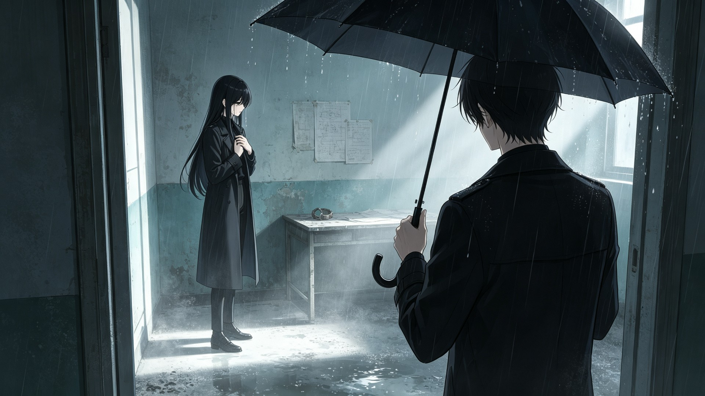
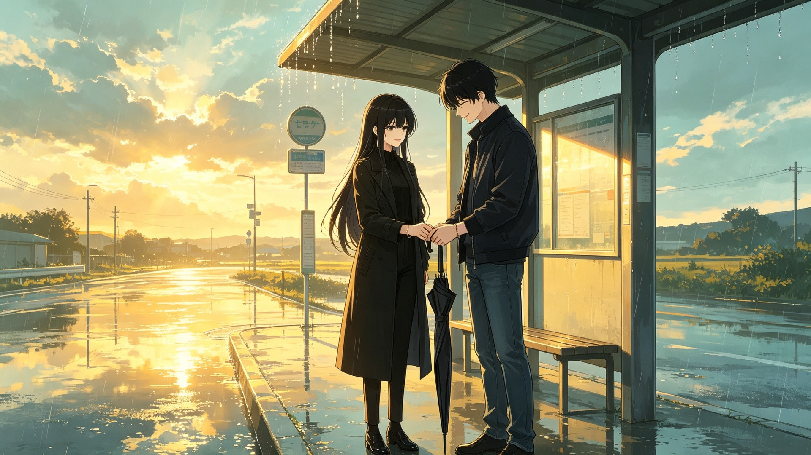

“同频灯亮起之前，不要相信雨会停。”
国产心理悬疑恋爱视觉小说 · 免费发布 · Windows 10 / 11
一场只有七天的亲密关系实验，一段从雨夜开始的悬疑恋爱。你能在第七夜之前，真正听懂另一个人的心跳吗？
你在一场“亲密关系重建计划”中，与陌生人 S-07 共同生活七天。你们戴着记录心跳的手环，完成关于距离、信任和边界的任务。随着心率曲线逐渐靠近，你发现她进入实验的目的并不简单。
从陌生到靠近，关系变化由每一次选择推动。
两个人的心跳越接近，蓝色灯越亮。
同频、雨停、各自成长、失温、008。
亲密不是奖励，而是被认真确认的选择。
三年前那把黑伞，把你们引向同一个雨夜。
立绘差分、剧情 CG、雨夜视频、BGM 与音效。

关系选择
雨窗将吻
答案之后
雨停了就回家“同频灯亮起之前，不要相信雨会停。”
国产心理悬疑恋爱视觉小说 · 免费发布 · Windows 10 / 11